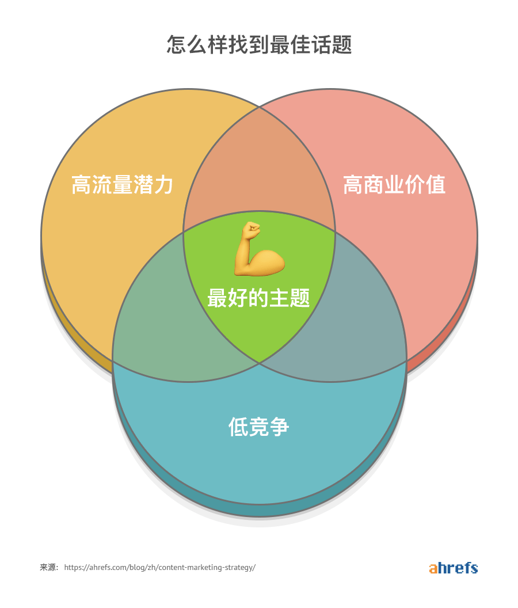
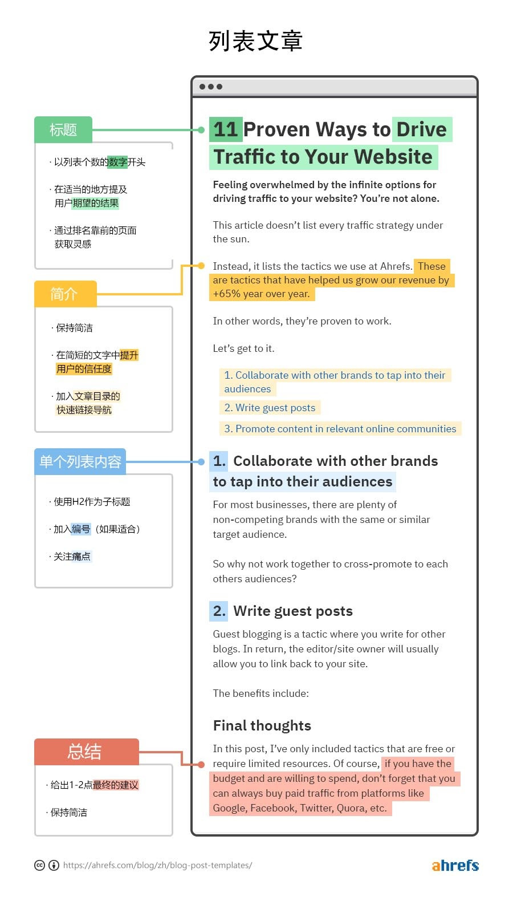
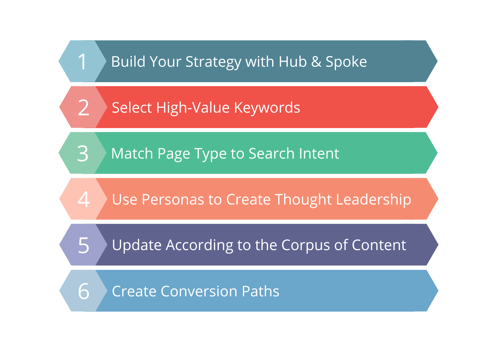

Vorwort: Als unabhängiger Website-Unternehmer mit 9 Jahren Google SEO-Erfahrung habe ich miterlebt, wie unzählige Websites durch qualitativ hochwertigen SEO-Content von null Besuchern zu Millionen monatlicher Aufrufe gewachsen sind. Dieser Leitfaden teilt meine bewährten SEO-Schreibmethoden vorbehaltlos mit Ihnen und hilft dabei, effektive SEO-Content-Erstellung zu meistern und häufige Fallstricke zu vermeiden.
Inhaltsverzeichnis
Kern-Framework für SEO Content-Erstellung Strategien
1. Warum braucht SEO Blog-Inhalte?
Viele unabhängige Website-Besitzer fragen mich: "Warum können wir uns nicht einfach auf Produktseiten für Google-Traffic verlassen? Warum so viel Zeit in Blog-Inhalte investieren?" Die Antwort ist eindeutig - Blog-Artikel sind der effektivste Weg, um Traffic anzuziehen, Vertrauen aufzubauen und Expertise zu demonstrieren.
1.1 Schreiben für präzise Zielgruppen-Personas
SEO Xiaoping kategorisiert SEO-Blog-Inhalte in zwei Typen:
- Traffic-fokussierte Inhalte: Zielgerichtet auf Keywords mit Suchvolumen
- Konversions-fokussierte Inhalte: Zielgerichtet auf Keywords mit geringem Volumen aber hoher Konversion
Traffic-fokussierte Artikel: Wir nutzen Tools wie Semrush, um Keywords mit hohem Volumen zu recherchieren und Inhalte zu erstellen, die in Suchmaschinen ranken können. Diese Artikel zielen darauf ab, neue Besucher anzuziehen und die Markenbekanntheit zu steigern.
Konversions-fokussierte Artikel: Inhalte, die um echtes Kundenfeedback und Bedenken erstellt werden, um Zweifel während des Entscheidungsprozesses zu adressieren. Obwohl diese Artikel möglicherweise geringeres Suchvolumen haben, verbessern sie die Konversionsraten erheblich.
üí° Echter Praxisfall
Ich schrieb einmal einen Artikel mit dem Titel "Wie man die richtige Industriereinigungsausrüstung auswählt" für ein B2B-Maschinenbauunternehmen. Obwohl dieses Keyword nur 100+ monatliche Suchanfragen hatte, erreichte der Artikel eine 15%ige Anfrage-Konversionsrate, weit über dem Branchendurchschnitt.
1.2 Aus Sicht der Suchmaschinen-Algorithmen
Vollständiger Blog-Content-Strategie Prozess
Blog-Schreiben verbessert die thematische Relevanz der Website, was für SEO-Rankings entscheidend ist:
- Vorwärts-Index-Optimierung: Durch relevantes Content-Volumen verstehen Suchmaschinen klar Ihren Branchenfokus
- Invertierte Index-Prinzipien: Suchmaschinen etablieren thematische Autorität durch Keyword-Verteilung und semantische Analyse
- Knowledge-Graph-Konstruktion: Unterstützung der Evolution von Suchmaschinen von Keyword-Segmentierung zu semantischem Verständnis, wodurch vollständige Branchen-Knowledge-Graphs gebildet werden
üí° SEO Xiaopings Einsicht
Produktseiten allein fehlt oft die ausreichende Inhaltstiefe und -breite, um für wettbewerbsintensive Keywords zu ranken. Blog-Artikel bieten reiche kontextuelle Informationen, die Suchmaschinen helfen, Website-Themen besser zu verstehen.
1.3 Kundenvertrauen aufbauen & Branchenexpertise demonstrieren
Diejenigen von uns mit tiefer Branchenerfahrung verstehen, was potenzielle Kunden benötigen. Durch Blog-Inhalte können wir:
- Professionelles Wissen und Brancheneinblicke präsentieren
- Häufige Kundenfragen und -bedenken adressieren
- Erfolgsgeschichten und praktische Erfahrungen teilen
- Markenautorität und Glaubwürdigkeit etablieren
2. Wie schreibt man effektive SEO-Blog-Artikel?
9 Schlüsselschritte für effizientes Blog-Schreiben
2.1 Keyword-Recherche & Themenplanung
Großartige SEO-Artikel beginnen mit präziser Keyword-Recherche. Hier ist mein Keyword-Recherche-Workflow:
Schritt 1: Kern-Keyword-Identifikation
Mit Tools wie Semrush und Ahrefs geschäftsrelevante Kern-Keywords identifizieren. Fokus auf:
- Moderates Suchvolumen (100-10.000 monatliche Suchanfragen)
- Bewältigbare Wettbewerbsschwierigkeit (KD<50)
- Klare kommerzielle Absicht
Schritt 2: Long-Tail-Keyword-Entdeckung
Rund um Kern-Keywords verwandte Long-Tail-Möglichkeiten entdecken:
- Frage-basierte Keywords (wie man, was ist, warum)
- Vergleichs-Keywords (vs, verglichen mit, Alternative)
- Standort-basierte Keywords (in Deutschland, für deutschen Markt)
Schritt 3: Suchintentions-Analyse
Die wahre Absicht der Nutzer bei der Suche nach diesen Keywords analysieren:
- Informational: Wissen und Informationen suchen
- Navigational: Spezifische Websites oder Marken suchen
- Commercial: Produkte oder Dienstleistungen vergleichen
- Transactional: Bereit für Kaufentscheidungen
2.2 Content-Struktur & Schreibtechniken
Standardstruktur für exzellente SEO-Artikel:
üìù √úberzeugende √úberschriften
- Kern-Keywords natürlich einbeziehen
- Innerhalb von 50-60 Zeichen bleiben
- Anreiz und klickwürdiges Interesse schaffen
- Nutzer-Suchmuster entsprechen
üìñ Klare Er√∂ffnungseinleitung
- Nutzerfragen direkt adressieren
- Kern-Keywords natürlich einbeziehen
- Hauptartikel-Inhalt vorab zeigen
- Innerhalb von 150-200 Wörtern bleiben
üóÇÔ∏?Detailliertes Inhaltsverzeichnis
- H2, H3 Tags zur Hierarchie-Bildung verwenden
- Jeder Abschnitt hat klare Themen
- Schnelle Informationsortung ermöglichen
- Suchmaschinen helfen, Content-Struktur zu verstehen
üí° Vielf√§ltige Content-Formate
- Texterklärungen + unterstützende Bilder
- Fallstudien + Daten-Unterstützung
- Schritt-für-Schritt-Leitfäden + Tool-Empfehlungen
- Schlüssel-Zusammenfassungen + umsetzbare Ratschläge
2.3 Content-Tiefe & Nutzerwert
Google priorisiert zunehmend Content-Tiefe und Nutzerwert. Hier sind meine Content-Qualitätsstandards:
‚ú?SEO Content-Qualit√§ts-Checkliste
Content-Tiefe
- ‚ñ?Alle Aspekte des Themas abdecken
- ‚ñ?Einzigartige Perspektiven und Einsichten bieten
- ‚ñ?Echte F√§lle und Daten einbeziehen
Nutzerwert
- ‚ñ?Echte Nutzerprobleme l√∂sen
- ‚ñ?Umsetzbare Empfehlungen geben
- ‚ñ?Genauigkeit und Aktualit√§t gew√§hrleisten
- ‚ñ?Klare, zug√§ngliche Sprache verwenden
SEO Technische Anforderungen
- ‚ñ?Keyword-Dichte 1-3%
- ‚ñ?Verwandte LSI-Keywords verwenden
- ‚ñ?Strategische interne Verlinkung implementieren
- ‚ñ?Alt-Tags f√ºr alle Bilder einbeziehen
3. Scheinbar produktive, aber schädliche SEO-Schreibpraktiken
⚠️ Häufige SEO-Schreibfehler
Viele investieren erhebliche Zeit und Mühe in SEO-Schreiben, sehen aber minimale Ergebnisse oder noch schlimmer, kontraproduktive Resultate. Hier sind die häufigsten schädlichen Schreibpraktiken, die ich identifiziert habe:
3.1 Die Keyword-Stuffing-Falle
‚ù?Falsches Beispiel
"SEO-Optimierung ist die beste SEO-Optimierungsmethode. Unsere SEO-Optimierungsdienstleistungen bieten professionelle SEO-Optimierungsstrategien, um optimale SEO-Optimierungsergebnisse zu erzielen. Unser SEO-Optimierungsteam hat umfangreiche SEO-Optimierungserfahrung..."
‚ú?Korrektes Beispiel
"Suchmaschinenoptimierung (SEO) ist eine effektive Strategie zur Verbesserung organischer Website-Rankings. Unser professionelles Team nutzt Keyword-Recherche, Content-Optimierung und technische Verbesserungen, um Kunden dabei zu helfen, bessere Sichtbarkeit und Traffic-Konversion in Google-Suchergebnissen zu erreichen."
Warum Keyword-Stuffing schädlich ist:
- Googles Algorithmus kann Keyword-Stuffing erkennen und bestrafen
- Beeinträchtigt die Nutzererfahrung beim Lesen erheblich
- Reduziert Content-Professionalität und Glaubwürdigkeit
- Kann zu Suchmaschinenstrafen führen
3.2 Unzureichende Content-Tiefe
Viele glauben, dass längere Artikel automatisch besser ranken, aber Content-Tiefe ist wichtiger als Wortanzahl:
| Oberflächlicher Content | Tiefer Content |
|---|---|
| Allgemeine Diskussionen, fehlen Details | Tiefgehende Analyse mit spezifischen Methoden |
| Wiederholt bestehenden Online-Content | Teilt einzigartige Einsichten und Erfahrungen |
| Theorie-lastig, fehlt praktische Anwendung | Kombiniert Fälle mit umsetzbarer Anleitung |
| Veraltete oder ungenaue Informationen | Zeitnahe Updates mit genauen Daten |
3.3 Nutzerintention ignorieren
Nutzer-Suchintentionsanalyse für "Wie wählt man CRM-Software aus":
‚ù?Falsches Verst√§ndnis
Annahme, dass Nutzer CRM-Definitionen und -Funktionen lernen möchten, einen Artikel über grundlegende CRM-Konzepte schreiben.
‚ú?Korrektes Verst√§ndnis
Nutzer wissen bereits, was CRM ist. Sie benötigen Auswahlkriterien, Vergleichsmethoden, Implementierungsratschläge und andere praktische Informationen.
3.4 Mangel an interner Verlinkungsstrategie
Viele veröffentlichen Artikel, ohne Verbindungen zu anderen Website-Inhalten zu berücksichtigen. Eine ordnungsgemäße interne Verlinkungsstrategie sollte:
- Relevante Verlinkung: Zu verwandten Themen-Artikeln verlinken
- Autoritätsübertragung: Von hochwertigen Seiten zu neuen Artikeln verlinken
- Nutzerführung: Nutzer dazu anleiten, verwandte Themen zu erkunden
- Website-Architektur: Klare Informationsstruktur aufbauen
3.5 Schlechte Bild-SEO-Optimierung
SEO Content-Optimierung Best Practices
Bilder sind entscheidende Komponenten von SEO-Artikeln, aber viele machen Optimierungsfehler:
Bild-SEO-Optimierung Essentials:
- Dateinamen-Optimierung: Beschreibende Dateinamen mit Keywords verwenden
- Alt-Tags: Genaue Alt-Beschreibungen für jedes Bild hinzufügen
- Bildkomprimierung: Dateigrößen für schnelleres Laden optimieren
- Größenanpassung: Responsives Design für verschiedene Geräte verwenden
- Strukturierte Daten: Strukturierte Auszeichnung für wichtige Bilder hinzufügen
4. SEO-Schreibstrategien für das KI-Zeitalter
Mit der Verbreitung von KI-Tools wie ChatGPT und Claude steht SEO-Schreiben vor neuen Möglichkeiten und Herausforderungen. Als praktischer SEO-Experte glaube ich, dass SEO-Schreiben im KI-Zeitalter strategisches Umdenken erfordert.
4.1 Ordnungsgemäße KI-Tool-Nutzung
‚ú?Empfohlene Ans√§tze
- Inspiration Brainstorming: KI für Ideengenerierung und Schreibinspiration nutzen
- Gliederungserstellung: Artikelstruktur und Inhaltsverzeichnis generieren
- Entwurfshilfe: KI-generierte erste Entwürfe mit umfangreicher menschlicher Bearbeitung
- Sprachverfeinerung: Ausdruck und Sprachfluss verbessern
- Datenrecherche: Beim Organisieren und Analysieren relevanter Daten helfen
‚ù?Zu vermeidende Praktiken
- Vollständige Abhängigkeit: KI-generierten Content direkt veröffentlichen
- Mangel an Verifikation: KI-Informationsgenauigkeit nicht überprüfen
- Schema-F-Ansatz: Identische KI-Prompts für Content-Generierung verwenden
- Fehlende Persönlichkeit: Persönliche Standpunkte und einzigartige Einsichten vermissen
- Massenproduktion: Große Mengen minderwertiger KI-Inhalte generieren
4.2 Unersetzlicher menschlicher Wert
Trotz KI-Fähigkeiten benötigen diese Aspekte immer noch menschliche Beteiligung:
- Praktische Erfahrung: KI kann keine echte Branchenpraxis-Erfahrung liefern
- Emotionale Resonanz: Menschlicher Ausdruck schafft stärkere Leserverbindungen
- Innovatives Denken: Einzigartige Perspektiven und innovative Einsichten
- Aktualität: Sensibilität für neueste Branchenentwicklungen
- Markenpersönlichkeit: Content-Stil, der zum Markenton passt
4.3 Content für KI-Suche optimieren
Mit dem Start von Google SGE (Search Generative Experience) und anderen KI-Suchfunktionen müssen wir SEO-Strategien anpassen:
KI-Zeitalter SEO-Optimierungspunkte:
1. Strukturierte Content-Präsentation
- Klare √úberschriften-Hierarchie verwenden (H1-H6)
- Content in Q&A-Format organisieren
- Umfassende FAQ-Abschnitte hinzufügen
- Listen und Tabellen zur Informationsorganisation verwenden
2. Autoritätssignal-Verstärkung
- Zuverlässige Datenquellen und Forschung zitieren
- Autor-Fachkompetenz-Hintergrund präsentieren
- Branchenexpertenanerkennung gewinnen
- Markenautorität aufbauen
3. Entitäts- und Beziehungsoptimierung
- Relevante Entitäten klar erwähnen (Personen, Orte, Organisationen)
- Verbindungen zwischen Themen etablieren
- Semantisch verwandtes Vokabular verwenden
- Umfassende Knowledge-Graphs aufbauen
5. Praktische Techniken & Tool-Empfehlungen
5.1 Mein SEO-Schreib-Workflow
Keyword-Recherche
Semrush verwenden, um Keyword-Schwierigkeit und Suchintention zu analysieren, geeignete Ziel-Keywords auswählen.
Konkurrenzanalyse
Top 10 rankende Konkurrenten-Content analysieren, um Content-Lücken und Verbesserungsmöglichkeiten zu identifizieren.
Content-Gliederung erstellen
Detaillierte Artikelgliederung entwickeln, die alle Nutzerbedürfnisse abdeckt.
Content-Erstellung
Basierend auf Gliederung schreiben, persönliche Erfahrung und einzigartige Einsichten einbeziehen.
SEO-Optimierung
Titel, Meta-Beschreibung, interne Links, Bild-Alt-Text und andere SEO-Elemente optimieren.
Qualitätsprüfung
Grammatik, Faktengenauigkeit, Nutzererfahrung und alle Aspekte überprüfen.
5.2 Wesentliche Tool-Empfehlungen
üîç Keyword-Recherche Tools
- Semrush: Umfassendes SEO-Tool mit genauer Keyword-Schwierigkeitsanalyse
- Ahrefs: Mächtige Backlink- und Keyword-Datenbank
- Google Keyword Planner: Kostenloses offizielles Google-Tool
- Answer The Public: Verwandte Fragen und Long-Tail-Keywords entdecken
✍️ Content-Erstellung Tools
- ChatGPT/Claude: KI-Schreibassistenten für Inspiration
- Grammarly: Grammatikprüfung und Ausdrucksoptimierung
- Hemingway Editor: Artikel-Lesbarkeit verbessern
- Canva: Unterstützende Bilder und Infografiken erstellen
üìä SEO-Analyse Tools
- Google Search Console: Suchleistung überwachen
- Screaming Frog: Website-technische SEO-Analyse
- PageSpeed Insights: Seitengeschwindigkeitsoptimierung
- Yoast SEO: WordPress SEO-Plugin
üìà Leistungs√ºberwachung Tools
- Google Analytics: Traffic- und Nutzerverhalten-Analyse
- Hotjar: Nutzer-Heatmaps und Session-Aufzeichnungen
- Rank Tracker: Keyword-Ranking-√úberwachung
- Search Console: Suchanfrage- und Klickdaten
5.3 Content-Veröffentlichungs- & Promotion-Strategie
Nach der Erstellung großartiger Inhalte sind effektive Veröffentlichungs- und Promotion-Strategien unerlässlich:
üìã Content-Promotion-Checkliste
Technische Optimierung
- ‚ñ?Angemessene URL-Struktur festlegen
- ‚ñ?Strukturierte Daten-Auszeichnung hinzuf√ºgen
- ‚ñ?Seitenladegeschwindigkeit optimieren
- ‚ñ?Mobile Responsivit√§t sicherstellen
- ‚ñ?Interne und externe Links einrichten
Social Promotion
- ‚ñ?Auf Social Media Plattformen teilen
- ‚ñ?An relevanten Branchen-Gruppendiskussionen teilnehmen
- ‚ñ?An E-Mail-Abonnenten senden
- ‚ñ?Branchen-Influencer kontaktieren
- ‚ñ?An relevanten Forum-Diskussionen teilnehmen
Kontinuierliche Optimierung
- ‚ñ?Keyword-Ranking-√Ñnderungen √ºberwachen
- ‚ñ?Nutzerverhalten-Daten analysieren
- ‚ñ?Content basierend auf Feedback aktualisieren
- ‚ñ?Neue relevante Informationen hinzuf√ºgen
- ‚ñ?Content-Update-Zeitplan erstellen
6. Wichtigste Erkenntnisse & Aktionsplan
üí° Kern-Punkte Zusammenfassung
üéØ Klare Ziele
Unterscheidung zwischen traffic-fokussiertem und konversions-fokussiertem Content, verschiedene Schreibstrategien entwickeln.
üîç Tiefe Recherche
Nutzer-Suchintention gründlich verstehen und wertvolle Lösungen bieten.
üìù Qualit√§t zuerst
Fokus auf Content-Tiefe und Einzigartigkeit, Keyword-Stuffing und andere Fallstricke vermeiden.
ü§ñ KI umarmen
KI-Tools weise nutzen, um Effizienz zu verbessern, während menschlicher Wert erhalten bleibt.
üöÄ Sofortiger Aktionsplan
Diese Woche Aktionen
- Semrush verwenden, um 3-5 Kern-Keywords zu analysieren
- Top 10 Konkurrenten-Content recherchieren
- Nächsten Monat Content-Veröffentlichungsplan entwickeln
Nächsten Monat Ziele
- 2-4 hochwertige SEO-Artikel veröffentlichen
- Content-Erstellung SOP-Prozess etablieren
- Artikel SEO-Leistungsdaten überwachen
Langfristige Planung
- Umfassende Content-Matrix aufbauen
- Markenautorität kultivieren
- Stabiles Traffic-Wachstum erreichen
üéâ Abschlie√üende Gedanken
SEO-Content-Schreiben ist keine Fähigkeit, die über Nacht gemeistert wird—es erfordert kontinuierliche Praxis und Optimierung. Es dauerte 9 Jahre, bis ich diese bewährte Methodik entwickelte. Ich hoffe, dieser Leitfaden hilft Ihnen dabei, häufige Fallstricke zu vermeiden und SEO-Schreib-Essentials schneller zu meistern.
Denken Sie daran: Großartige SEO-Artikel müssen zuerst großartige Artikel sein. Nur Content, der echten Nutzerwert schafft, kann langfristigen Erfolg in Suchmaschinen erreichen.